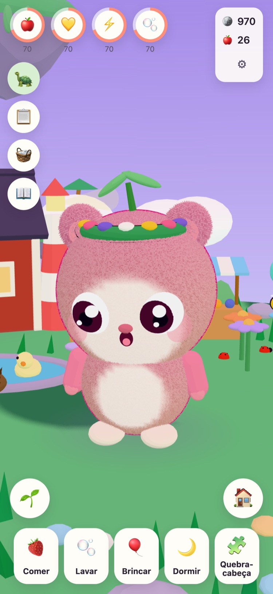
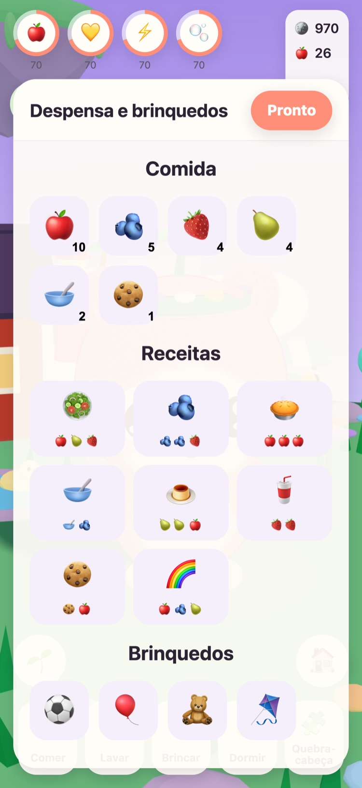
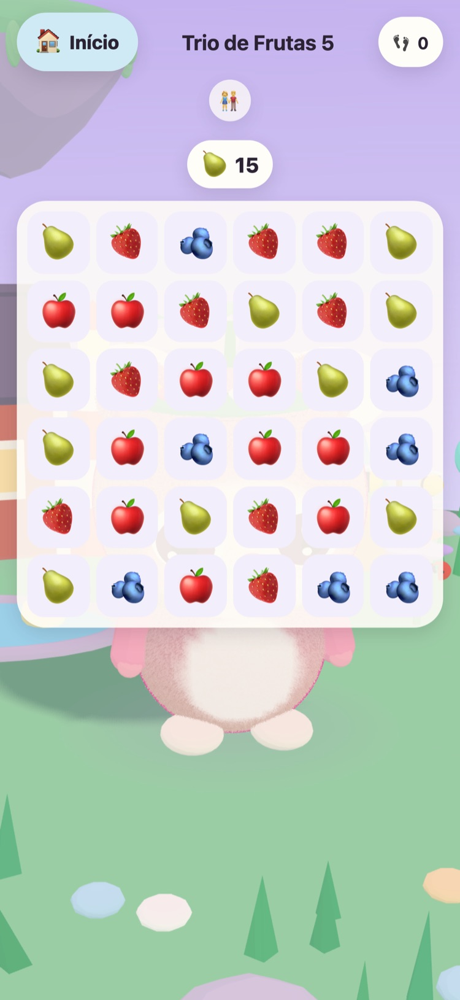
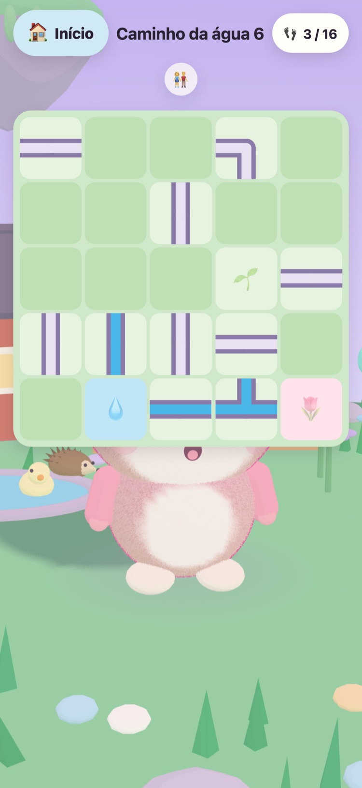
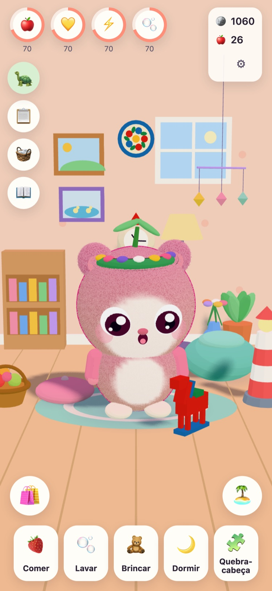
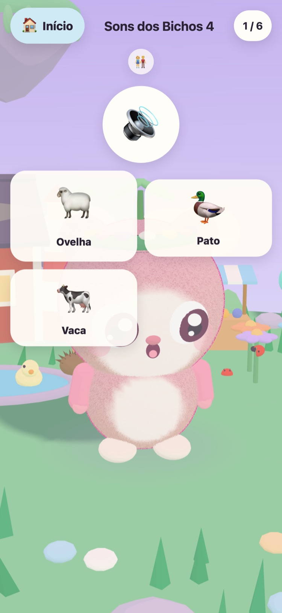

JUNOLittle Worlds
Faça nascer um Juno, cuide dele e resolva quebra-cabeças tranquilos que despertam uma ilha flutuante. Um jogo calmo para crianças de 6 a 10 anos, no iPhone e no iPad.
Olá! Encontrei três ovos quentinhos. Qual deles é o seu?
- Sem anúncios
- Sem rastreamento
- Sem conta
- Sem cronômetros nem pressão






Um amiguinho só seu
Vovô Tintin, a velha tartaruga que cuida da Ilha do Prado, encontrou três ovos quentinhos. Seu filho escolhe um e dá nome a quem nasce. A partir daí, o Juno é dele: para alimentar, dar banho, brincar junto e pôr para tirar uma soneca.
-
Escolha um ovo
Três ovos quentinhos, três cores. Seu filho escolhe um e vê o ovo se abrir.
-
Dê um nome, dê carinho
Comer, tomar banho, brincar e tirar soneca. O Juno mostra como está se sentindo e cresce à medida que a amizade cresce.
-
Desperte a ilha
Cada estrela dos quebra-cabeças traz a luz de volta à Ilha do Prado, até que as flores, as abelhas e os patos voltem para casa.
Comer, tomar banho, brincar, dormir
Comidas e brinquedos diferentes, bolhas no banho e um Juno que mostra como está se sentindo. As necessidades diminuem devagar e nunca chegam a zero, então um Juno nunca se perde.
57 quebra-cabeças tranquilos
Trio de Frutas, Jardim da Memória, e Sons dos Bichos e dos Veículos com gravações reais. As estrelas vêm das jogadas, nunca do tempo, e tentar de novo é sempre grátis.
Uma ilha que desperta
O Jardim das Flores se abre com as abelhas, a Lagoa dos Patos se enche de água e de patos, e as sementes viram maçãs e morangos nos canteiros da horta.
Um quarto para deixar aconchegante
As moedas dos quebra-cabeças e das missões do dia compram enfeites para o quarto do Juno e roupas para ele usar. Nada na loja de moedas custa dinheiro de verdade.
Leitura em voz alta
Vovô Tintin lê cada frase em voz alta com a própria voz acolhedora, para crianças que ainda não sabem ler. Toque nele para ouvir de novo.
Uma Área dos pais
Protegida por um controle parental: idioma, leitura em voz alta, sons, hora de dormir e um lembrete gentil de pausa. Na hora de dormir, o Juno dorme e os quebra-cabeças esperam até de manhã.
Fala 21 idiomas
Vovô Tintin fala com seu filho no idioma dele. Escolha um na Área dos pais ou deixe o jogo seguir o idioma do dispositivo.
English Svenska Dansk Norsk Suomi Deutsch Nederlands Français Español Italiano Português (Brasil) Polski Русский Ελληνικά Türkçe Bahasa Melayu Kiswahili हिन्दी 日本語 한국어 简体中文
Feito por um avô
JUNO foi feito na Suécia por um avô para a neta: um jogo que ele ficaria feliz em vê-la jogar. Vovô Tintin, a tartaruga do jogo, é ele.
Por isso as regras são simples. Nada que pressione, nada que engane e nada que colete qualquer coisa sobre seu filho.
Grátis e sem anúncios
JUNO é grátis para baixar e não tem anúncios, rastreamento nem conta. Tudo o que seu filho faz fica no seu dispositivo. Veja a página de privacidade.
Um adulto pode comprar o JUNO Plus ou o Pacote de Inverno na Área dos pais, protegida pelo controle parental. Os dois são compras únicas que você pode restaurar e compartilhar com sua família.